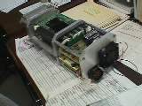
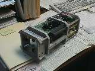
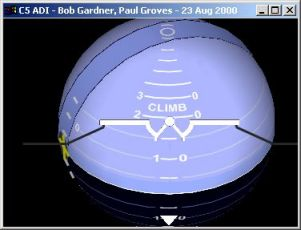
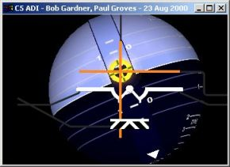
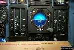

|
|
background In late May 2000 I got an email from an employee of [AITI]. They were contracted by the USAF to maintain attitude direction indicators (ADIs) in the air force's C5 training simulators. AITI proposed that fully electronic versions of the ADIs could be supplied. These would require little or no maintenance as they contain no moving parts.
I was
approached by one of their software engineers to give pointers on the OpenGL
code necessary to drive the hybrid ADI's display. They liked what
they saw and his manager commissioned me to provide all the OpenGL source for
the project. Naturally they wanted clear, easy to maintain source for
their money...
At first AITI thought I lived stateside and offered to move me to Florida for
a couple of months. When they realised I was in the UK we decided that
teleworking would be cheaper for all concerned.
They sent me some old ADI parts for my inspection and wrote up a specification for me to follow. It turned out that these ADI balls were much more complex than I first thought. It became obvious just why they were so expensive. They aren't simply self righting balls - they have an expanded pitch scale, a special ILS landing mode with bulbs - and we were rendering all the needles and flags with OpenGL too.
|
A look at the ADI ball with the cover off. Note all that wiring! |
An ADI in action. |
|
|
|
|
|
implementation We used GLUT for the ADI program. In every idle 'tick' the analogue/digital converter was polled and these values were scaled by the appropriate amounts for our OpenGL version of the ADI ball. It was decided that Linux with the X Windows server would be used as the operating system for our little embedded computer. The reasons for this were clear. We could tailor Linux exactly to our hardware, by making the distribution as small as possible we could reduce costs by using smaller a flashdisk. In addition, there would be no licensing costs.
The target hardware was a PC104 motherboard, measuring 3.5"x3.5". A PCI riser card was plugged into this and onto this, a PCI TNT2 graphics card was connected. The output of the videocard was scan converted down to a 320x235 pixel LCD screen - this would display our ADI image. This was far from an ideal solution. We tried looking for PC104 cards with onboard accelerated video that had an LCD out. We didn't find one until after the project was well underway.
Work started at AITI in Florida on the hardware, shoehorning all that equipment into one tiny box.
|  |
 |
| The back end of the prototype ADI hardware. Notice the fan and plug socket? These are exactly like the 'real' part - our ADI had to be plug-for-plug compatible with the original. | This view from the front shows that the LCD screen had yet to be installed. |
Work on the software continued this side of the Atlantic. After many many emails back and forth and numerous phone calls we'd got the look of the ADI just right. The USAF were very picky, they wanted our ball to look as much like the real part as possible. Right down to the way the illumination worked.
|
 |
 |
The images above show the software in action. In the first picture the ADI in operating in 'normal' mode. In the final screengrab, the ADI is in ILS mode. The runway altitude indicator is visible and the glide slope is indicated by the needles and the bulb on the ILS ring. Note that these images have been resized and the final implementation ran in fullscreen mode under Linux.
|
|
the product The prototype model was extensively tested and the USAF accepted the design and made their formal order. AITI are currently in 'manufacturing mode', trying to bang out as many of these things as they can.
|
 |
|
| Two views of the finished article in a USAF C5 trainer. | |
| Dave from AITI takes the simulator for a spin, keeping an eye on the ADI no doubt. | |
the
future AITI have
already had requests from other aircraft operators about their 'hybrid ADIs'.
With any luck these will come to fruition and a new division of AITIs business
will truly be airborne (sorry about the pun).
If you have any queries about this project, or any other computer based
avionic displays, don't hesitate to contact me: [paulyg@clara.net] or
[AITI]
Back to [pauls opengl page]
|
|
Website and content by Paul Groves. Best viewed at 800x600.